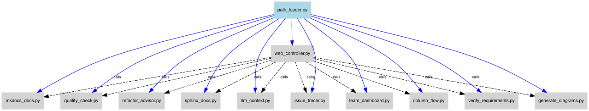

Developer Tools Overview¶
A-LEMS includes 11 developer tools for automation, debugging, and maintenance. All tools are located in scripts/tools/ and follow a consistent interface.
🛠️ Tool Categories¶
| Category | Tools | Purpose |
|---|---|---|
| Code Analysis | llm_context.py, column_flow.py, refactor_advisor.py |
Understand and analyze code |
| Documentation | sphinx_docs.py, mkdocs_docs.py, generate_diagrams.py |
Generate documentation |
| Quality | quality_check.py, verify_requirements.py |
Maintain code quality |
| Team | team_dashboard.py |
Team insights and bus factor |
| Web UI | web_controller.py |
One-stop interface for all tools |
| Diagnostics | issue_tracer.py |
System health checks |
🔧 Tools Dependency Graph¶

📋 Tool 1: llm_context.py - LLM Context Generator¶
Purpose: Generate complete code context for LLM prompts.
Output: Schema, related files, data flow, dependencies.
Use when: You need to ask an LLM to generate code changes.
📋 Tool 2: sphinx_docs.py - API Documentation¶
Purpose: Generate developer API docs from Python docstrings.
# Build documentation
python scripts/tools/sphinx_docs.py --build
# Open in browser
python scripts/tools/sphinx_docs.py --open
Output: HTML/PDF documentation in docs/generated/sphinx/.
Use when: You need technical reference documentation.
📋 Tool 3: mkdocs_docs.py - User Documentation¶
Purpose: Generate user-friendly guides and tutorials.
# Build documentation
python scripts/tools/mkdocs_docs.py --build
# Serve locally for preview
python scripts/tools/mkdocs_docs.py --serve
# Initialize config file
python scripts/tools/mkdocs_docs.py --init
Output: Website in docs/generated/mkdocs/.
Use when: Users need to understand how to use A-LEMS.
📋 Tool 4: quality_check.py - Code Quality Guardian¶
Purpose: Run comprehensive quality checks.
# Standard check
python scripts/tools/quality_check.py
# Verbose output
python scripts/tools/quality_check.py --verbose
Checks: Pylint, mypy, radon, bandit, vulture, black, isort.
Use when: Before committing code.
📋 Tool 5: refactor_advisor.py - Refactoring Advisor¶
Purpose: Suggest code structure improvements.
Output: Duplicate code detection, complexity hotspots, split suggestions.
Use when: Code feels messy or hard to maintain.
📋 Tool 6: team_dashboard.py - Collaboration Dashboard¶
Purpose: Show team activity and knowledge gaps.
# Default (30 days)
python scripts/tools/team_dashboard.py
# Custom time period
python scripts/tools/team_dashboard.py --days 90
Output: Bus factor analysis, ownership map, activity hotspots.
Use when: Onboarding new team members or identifying risks.
📋 Tool 7: web_controller.py - Web UI¶
Purpose: One-stop UI for all developer tools.
Features: Buttons for all tools, real-time output, column flow tracer.
Use when: You want a GUI instead of command line.
📋 Tool 8: verify_requirements.py - Requirements Verifier¶
Purpose: Compare specifications against actual code.
# Default check
python scripts/tools/verify_requirements.py
# Custom spec file
python scripts/tools/verify_requirements.py --spec docs/requirements.yaml
Output: What's implemented, partially done, missing.
Use when: Tracking project progress or preparing releases.
📋 Tool 9: column_flow.py - Column Flow Analyzer¶
Purpose: Trace how database columns get their data.
Output: INSERT locations, data sources, transformations.
Use when: Debugging data issues or adding new columns.
📋 Tool 10: generate_diagrams.py - Diagram Generator¶
Purpose: Create architecture and dependency diagrams.
# Generate all diagrams
python scripts/tools/generate_diagrams.py
# Generate specific diagram
python scripts/tools/generate_diagrams.py --name architecture
# Watch mode
python scripts/tools/generate_diagrams.py --watch
Output: SVG files in ../assets/diagrams/.
Use when: Updating documentation or preparing papers.
📋 Tool 11: issue_tracer.py - Issue Auto-Diagnoser¶
Purpose: Find root causes of problems automatically.
# Run all checks
python scripts/tools/issue_tracer.py
# Verbose output
python scripts/tools/issue_tracer.py --verbose
# Save to file
python scripts/tools/issue_tracer.py --output report.txt
Output: Comprehensive system health report.
Use when: Something is broken and you don't know why.
🔧 Path Configuration¶
All tools use path_loader.py for centralized path management:
from scripts.tools.path_loader import config
print(f"Project root: {config.ROOT}")
print(f"Database: {config.DB_PATH}")
print(f"Diagrams output: {config.DIAGRAMS_OUTPUT}")
print(f"MkDocs source: {config.MKDOCS_SOURCE}")
📁 Tools Overview¶
The scripts/tools/ directory contains all developer tools:
| Tool | Purpose |
|---|---|
path_loader.py |
Centralized path configuration |
llm_context.py |
Generate context for LLM prompts |
sphinx_docs.py |
Build API documentation |
mkdocs_docs.py |
Build user documentation |
quality_check.py |
Run code quality checks |
refactor_advisor.py |
Suggest refactoring improvements |
team_dashboard.py |
Team activity insights |
web_controller.py |
Web UI for all tools |
verify_requirements.py |
Compare specs vs code |
column_flow.py |
Trace database column data flow |
generate_diagrams.py |
Generate system diagrams |
diagram_processor.py |
Core diagram rendering logic |
issue_tracer.py |
System diagnostics |
🚀 Quick Reference¶
| Tool | Command |
|---|---|
| LLM Context | llm_context.py --change "..." |
| API Docs | sphinx_docs.py --build |
| User Docs | mkdocs_docs.py --build |
| Quality | quality_check.py |
| Refactoring | refactor_advisor.py --target FILE |
| Team | team_dashboard.py |
| Web UI | web_controller.py |
| Requirements | verify_requirements.py |
| Column Flow | column_flow.py --table T --column C |
| Diagrams | generate_diagrams.py |
| Issue Tracer | issue_tracer.py |
➕ Adding New Tools¶
To add a new tool:
- Create a new Python file in
scripts/tools/ - Follow the existing pattern (argparse, main function)
- Use
path_loader.pyfor all paths - Add to
web_controller.pytool_scriptsdict - Update
requirements-tools.txtif needed - Add to this document
- Test with
--helpflag
Example template:
#!/usr/bin/env python3
"""
New Tool Description
"""
import argparse
import sys
from pathlib import Path
sys.path.append(str(Path(__file__).parent))
from path_loader import config
def main():
parser = argparse.ArgumentParser()
parser.add_argument("--option", help="Description")
args = parser.parse_args()
# Your tool logic here
print(f"Using config: {config.ROOT}")
if __name__ == "__main__":
main()